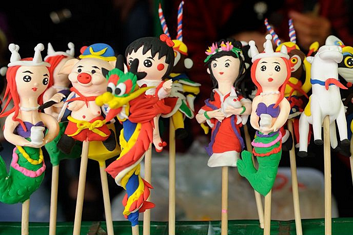

Vietnamese Culture
Vietnamese Culture
June 06, 2020
日本の飴細工をご存知でしょうか？ベトナムにも飴細工みたいなものがありますよ。Link但し、飴細工と違う点のはこれが麦粉で作られます(笑笑)。それでは、この記事はベトナムのトーへを紹介させて頂きます。 トーへ（英語：Toy Figurine, 原名：Tò He は麦粉で漫画のキャラクターや動物のように作られるものです。昔、ベトナムの子供たちはすごく人気があります。お祭り、中秋の際によく見かけたが今では珍しくなった。